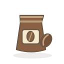
분쇄 원두1단계 · ground_coffee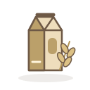
오트밀크1단계 · oat_milk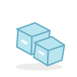
얼음1단계 · ice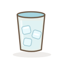
얼음 컵2단계 · iced_cup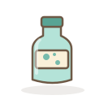
탄산수1단계 · sparkling_water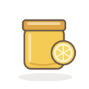
레몬청1단계 · lemon_syrup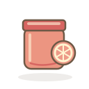
자몽청1단계 · grapefruit_syrup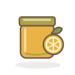
유자청1단계 · yuzu_syrup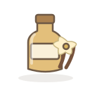
바닐라 시럽1단계 · vanilla_syrup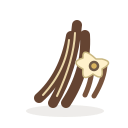
바닐라빈1단계 · vanilla_bean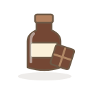
초콜릿 소스1단계 · chocolate_sauce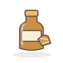
카라멜 소스1단계 · caramel_sauce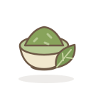
말차 파우더1단계 · matcha_powder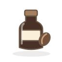
콜드브루 원액2단계 · cold_brew_concentrate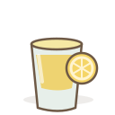
레몬 베이스3단계 · lemon_base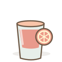
자몽 베이스3단계 · grapefruit_base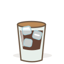
아이스 에스프레소3단계 · iced_espresso_base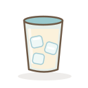
아이스 밀크3단계 · iced_milk_base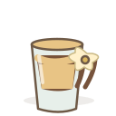
바닐라 에스프레소3단계 · vanilla_espresso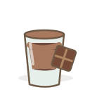
모카 베이스3단계 · mocha_base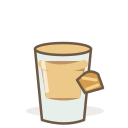
마키아토 베이스3단계 · caramel_base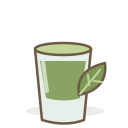
말차 베이스2단계 · matcha_cup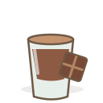
초콜릿 베이스2단계 · chocolate_cup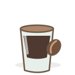
콜드브루 베이스3단계 · cold_brew_base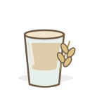
오트 베이스2단계 · oat_cup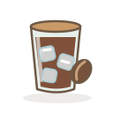
아이스 아메리카노4단계 · iced_americano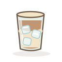
아이스 카페라떼4단계 · iced_latte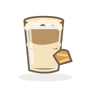
카라멜 마키아토4단계 · caramel_macchiato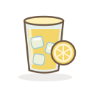
레몬에이드4단계 · lemonade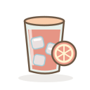
자몽에이드4단계 · grapefruitade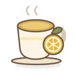
유자차4단계 · yuzu_tea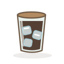
콜드브루4단계 · cold_brew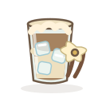
바닐라빈 오트 콜드브루5단계 · vanilla_oat_cold_brew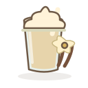
바닐라 아이스 블렌디드5단계 · vanilla_blended